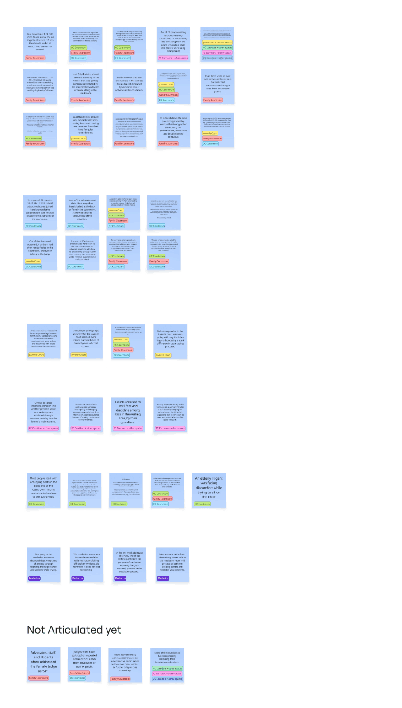
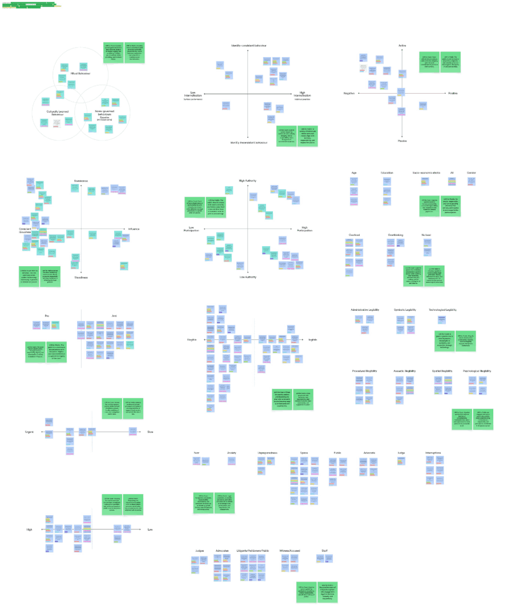
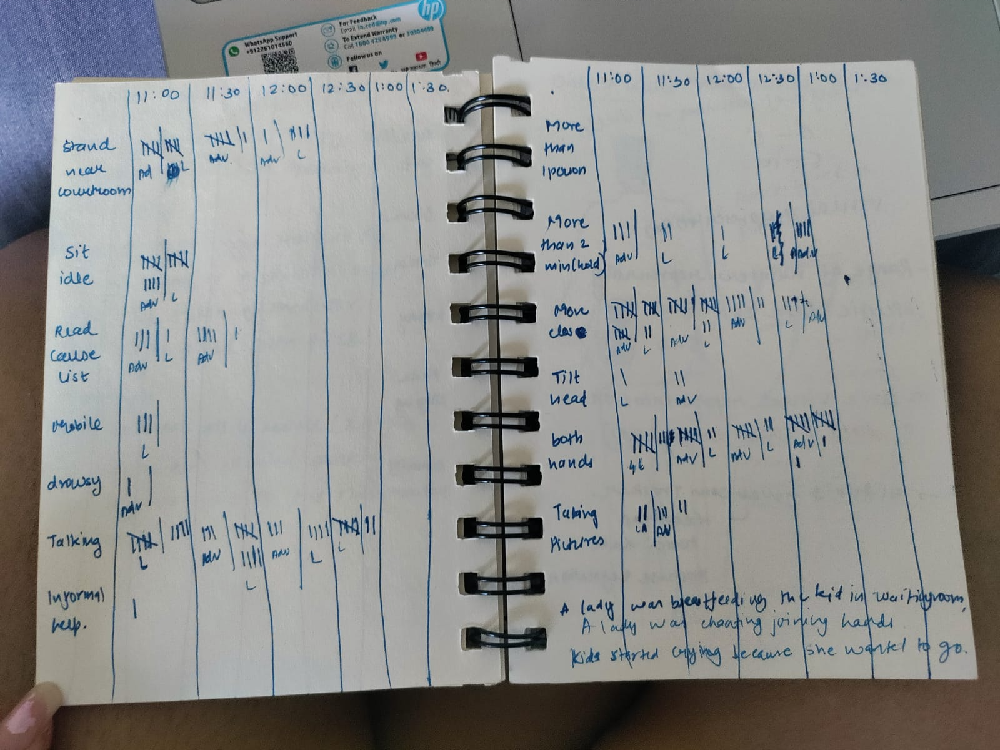

IN THE MATTER OF
Law & Life
The waiting public vs a courtroom that tells them almost nothing
High Court of Gujarat & District Court, Gandhinagar
CALLED NEXT ↓
I. THE PETITION
A justice system with a waiting list
cases pending in India’s courts · 54 million
{{ stampPending }}Behind: a cause list that doesn’t end, in the same proportions. Source: njdg.ecourts.gov.in
II. STATEMENT OF WITNESS
“She has come to this corridor every 15 days for seven years, and still doesn’t know when her turn will come.”
III. PROCEEDINGS
From two courthouses to three behaviours worth designing for
Four stages, twelve steps. Each number is what that step produced. Select any step to jump to it.
IV. SITE INSPECTION
Two courthouses, one floor at a time
Shadow ethnography: follow, watch, write down only what can be seen. Phones weren’t allowed inside, so everything was recorded by hand.
Inside each, we sat in: courtrooms · corridors · mediation rooms · judge chambers · advocate lounges
WHAT WE DID THERE
OVERHEARD AND DRAWN
What the building told us, in its own words
Drawn on site, since phones weren’t allowed. Each page carries the line we heard or saw there.
V. PARTIES TO THE CASE
Seventeen kinds of people, all there because of one
Everyone in a court case is there because someone brought a dispute. We grouped them by what they do for that person, not by rank, since rank shifts from court to court.
Thirteen roles exist to serve four. In our interviews, the four said they had the least say in what happened.
Each party was mapped across activities, behaviours, quotes, objects, environment, associates, pain points, delights and findings. Nine litigants were interviewed, with cases from 2–3 months to 18 years old.
VI. EXHIBITS
44 observations, read through 14 lenses
Every observation from the field became one sticky note. We then sorted the same notes again and again, each time by a different question.

ORIGINAL WORKING BOARDThe board on the left holds all 44 notes from the field, one per observation, each tagged by the court and space it came from. Two of them, typed out:
Most people start with occupying seats in the back end of the courtroom, hinting hesitation to be close to the authorities.
HC COURTROOMAn elderly litigant was facing discomfort while trying to sit on the chair.
HC COURTROOMWe sorted the same notes 14 times, each by a different question: who holds authority, who participates, how legible the space is, and more. The original maps are on the right. Below, each one is redrawn so it can be read at a glance.
Who holds authority, and who gets to take part?
AUTHORITY GRADIENTCould people understand the procedure, the sound, the space?
LEGIBLE / ILLEGIBLEWhat set each behaviour off: fear, the judge, the space?
STIMULI
ORIGINAL WORKING BOARD{{ lm.q }}
Positions are approximate.
VII. THE CHARGE SHEET
15 broken expectations. Seven on each side of the bar.
{{ stampCounts }}The bar is the railing that separates the court from the public. We noted 15 moments where behaviour broke from what each side is expected to do. Seven count against the court, seven against the public. The scale sits level.
The court should uphold justice through fairness, impartiality, dignity, and timely resolution of disputes.
The public should behave with discipline, respect, and non-interference to uphold the dignity of the court.
■ red counts feed one of the three behaviour chains
VIII. CROSS-EXAMINATION
Behaviour against space and time
Tallied in our notebooks every 30 minutes from 11:00, then charted. The rows in bold picked our three chains.
Tallied by hand in our notebook, every half hour from 11:00. Each mark is one person seen doing that behaviour.

Redrawn from our charts. Circle sizes are relative.
IX. FINDINGS OF FACT
Three stops on one walk into court
One courtroom, three spots. At each one, the same behaviour kept repeating.
Everyone crowds one cause list
People crowd the door to watch
A voice from the benches sways the witness
No accessible information in vernacular languages. The cause list is the only source.
No real-time updates, so people crowd the door, peek inside and interrupt.
Interruptions and possible cues in the courtroom might lead to unfair proceedings.
X. GROUNDS
Four kinds of cause, and the biases behind them
{{ t.v }}
PREJUDICE ON RECORD · THE BIASES LINKED TO EACH CHAIN, AND THE ONES WE WATCHED FOR IN OURSELVES
XI. THE EVIDENCE BOARD
How one cause leads to the next
Our systems map, pinned up. Root causes on the left, the behaviours they produce, then what happens inside the courtroom.
XII. JUDGMENT
The study finds
- {{ ins.n }}. {{ ins.t }} INSIGHT · {{ ins.i }} NEED · {{ ins.need }}
AND THEREFORE ASKS
How might we help people waiting in district courts see their turn coming, so the doorway stays clear and the witness box stays fair?
{{ stampBrief }}IT IS HEREBY PROPOSED
Let people see their turn coming
- ({{ i.n }}) {{ i.t }}{{ i.sub }}
Early ideas. The plans show intent, not a tested design.